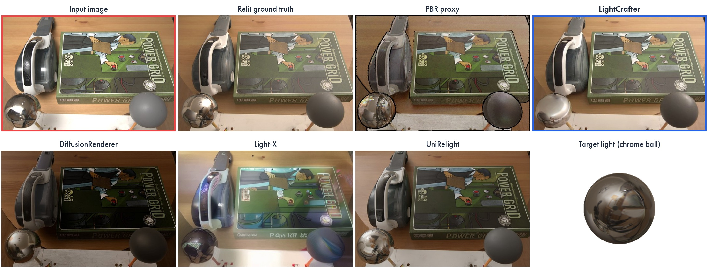
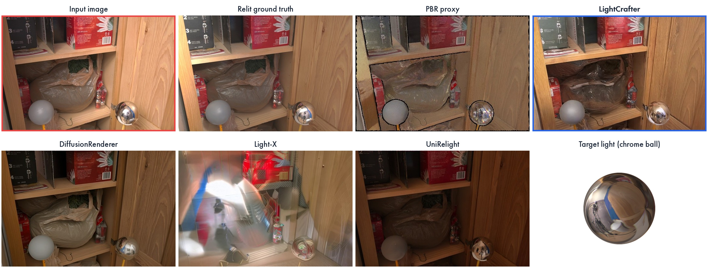
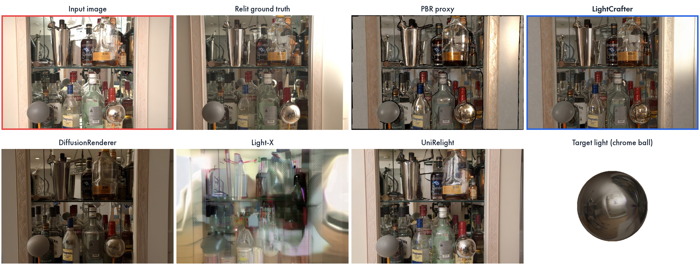

LightCrafterPBR-Conditioned Video Diffusion Refinement for Controllable and Consistent Relighting


Abstract
Video relighting requires balancing long-form temporal consistency with physically grounded understanding of light transport, which depends on accurate estimation of intrinsic scene properties such as materials, geometry, and illumination. Existing methods follow two paradigms: (1) explicitly reconstruct the photometric properties of the input video via inverse rendering and relight the reconstruction to a target illumination via forward rendering, either with physically-based rendering (PBR) or a neural rendering engine; such methods suffer from noisy reconstructions and struggle with hard-to-model effects such as global illumination. (2) Frame the task as generative video-to-video translation conditioned on a relighting target (environment map or text); such a framing limits relighting control and temporal stability, since diffusion models struggle to translate long videos, and is limited by the availability of paired training data.
We propose LightCrafter, a hybrid pipeline that reformulates video relighting as video translation of a proxy video: rather than translating the input video to the target directly, we translate a PBR rendering of the input video under the target illumination. This "bakes" the illumination target into the proxy, removing the need to teach the diffusion model about environment maps, and naturally provides intricate lighting control and long-form temporal consistency. PBR renders already outperform some prior art for relighting but miss effects like global illumination; to capture them we leverage the photometric priors of video generation models by post-training CogVideoX on synthetic video pairs and real-world unpaired videos. We outperform prior state of the art on real-world relighting benchmarks and contribute a synthetic benchmark for further analysis. We will release our dataset, benchmark, metrics, and code.

Video relighting
One input video relit to three HDR environment maps. The top row shows the PBR proxy rendered under each target (chrome-ball probe inset); the bottom row shows the refined output. Illumination 1 is a clear sky with a low sun (autumn_field_puresky), Illumination 2 a clear noon sky with a high sun (kiara_5_noon), Illumination 3 a misty, sunless morning (kloofendal_misty_morning). The proxy captures sky color, sun direction and shadow layout; the refiner repairs reconstruction artifacts (broken geometry, missing sky, flat materials) while preserving them.
Downtown driving clip.
Highway driving clip.
Parking-lot driving clip.
Baroque palace courtyard.
Temple of Heaven.
Comparison to baselines
We compare against DiffusionRenderer, Light-X, UniRelight and PCRP-Video. In every panel the input and our result are outlined, and the PBR proxy that conditions our refiner is shown next to them. Where the target is an HDR environment map we show it as a panorama with a chrome-ball probe (the sun is marked in red when it is a hard, dominant light) so sky color, sun direction and shadow depth can be checked against it for every method.
Real-world videos
For qualitative in-the-wild inference we use public stock or generated videos (Pexels, Sora, Kling) relit to a new HDR environment map; these are the clips shown in our user study. For paired real-video evaluation we take unseen DL3DV clips and, following Light-X, first relight them with Light-A-Video, then use the relit video as input and map it back to the original, which serves as the reference (last item).
City street → clear noon sky (kiara_5_noon). Ours replaces the overcast sky with the target's deep blue and the trolley casts a long, oblique shadow matching the 51° sun, while the baselines either keep the flat overcast look with little cast shadow or have short shadows that don't match the sun direction.
Coastal lighthouse (drone) relit to a new HDR environment map. Ours stays temporally consistent over the long sequence because relighting is explicitly grounded in the PBR render, while the baselines interpret the lighting independently in each diffusion chunk, so their shadows and colors flicker between neighboring chunks despite only a small camera rotation.
Downtown drive → clear sky with a low sun (autumn_field_puresky, 29° elevation). Ours replaces the grey sky with the target's clear blue and adds shadows from the low sun, while the baselines either keep the input's overcast lighting or change the tone without casting any shadow.
Parking lot → clear sky with a low sun (autumn_field_puresky). Ours swaps the storm clouds for the target's clear sky and throws long shadows across the lot, while the baselines either keep the cloudy sky of the input or blur away scene detail.
Baroque palace → misty morning (kloofendal_misty_morning). Ours replaces the blue sky with fog and dissolves the hard shadows under the arcades, while the baselines either keep the sunlit facade and blue sky or wash out the stone texture.
Highway → misty morning (kloofendal_misty_morning). Ours turns the sky hazy and softens the truck's hard shadow since the target has no dominant sun, while the baselines either keep the sunny look of the input or degrade the road and vehicles.
Dancers → misty morning (kloofendal_misty_morning). Ours replaces the sunset sky with fog and neutralizes the warm tint, while the baselines keep the pink sky and warm tone and lose the dancers' details.
DL3DV round trip: the original video is first relit by Light-A-Video (Input) and every method relights it back to the original illumination, so the original video is the Reference. Ours recovers the reference's overcast sky and daylight colors, while the baselines either keep a residual color cast from the input or drift to a wrong warm or over-bright tone.
Synthetic benchmark
Synthetic scenes are built in Blender from filtered Objaverse objects and primitive shapes on a textured ground plane under HDR environment illumination, rendered along camera trajectories with varying elevation, distance and object motion. Relighting accuracy can be judged against ground truth over time.
Synthetic scene 1: static objects with a rotating camera
Synthetic scene 2: moving objects with a moving camera
Synthetic scene 3: static objects with rotating lights
MIT Multi-Illumination (real, paired ground truth)
Real indoor scenes with paired ground truth from the held-out everett building, each captured under 25 flash directions. Every method relights the same input to the selected target light; the real capture under that light is the ground truth.

Scene: Kettle and board game.

Scene: Cabinet shelves.

Scene: Glass cabinet with bottles.
Applications: indoor light editing
Real-world indoor lighting editing: GR3EN vs. LuxRemix vs. LightCrafter
Because lights are explicit 3D entities in the PBR proxy, an edit such as keeping only a single ceiling light on or keeping on a light that is outside the frame is rendered exactly and then refined. We compare against GR3EN (per-light palette masks on visible fixtures) and LuxRemix (given the ground-truth relit middle frame as its reference) on synthetic indoor scenes generated with Infinigen (windows 1–2), the generator behind both baselines' training data, where an exact re-rendered target exists, and on a real meeting-room clip with an inserted virtual light (window 3).
Window 1 — Shelf room (Infinigen, exact re-rendered target). All ceiling lights are on in the input; the edit switches every light off except one. Ours reproduces the dimmer room and the falloff around the remaining light, GR3EN removes all spotlights, darker than the input brightness, and LuxRemix, propagating the ground-truth reference frame it is given, matches the target closely. Both baselines are purpose-built for indoor editing and trained on Infinigen; ours has never seen it.
Window 2 — Living room (Infinigen, exact re-rendered target). All lights are on in the input; the edit keeps on a single light and switches off the rest. Ours dims the room and keeps only the spill from the unseen light; GR3EN, whose palette mask can only address visible fixtures, leaves the room lit; LuxRemix follows its reference frame and turns the room nearly half-black.
Window 3 — Meeting room (real footage). Two neutral ceiling panels are recolored to blue and yellow. GR3EN receives the fixture mask; LuxRemix, whose single-view editor is not public, receives the input middle frame with the recolored panels composited in as its reference and propagates it; our PBR proxy renders the new emission before refinement. Ours keeps each color on its own panel with blue and warm spill on the corresponding walls and leaves the rest of the room intact; GR3EN tints the whole room warm and drops the blue light; LuxRemix brightens the room roughly uniformly with almost no colored light reaching the scene. Because the edit is enforced in the proxy rather than inferred from a mask, ours gives finer control over light color, position, and falloff.